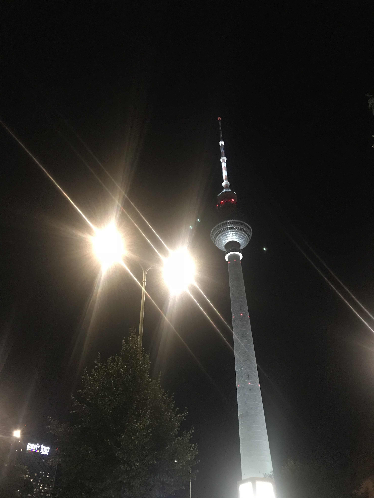
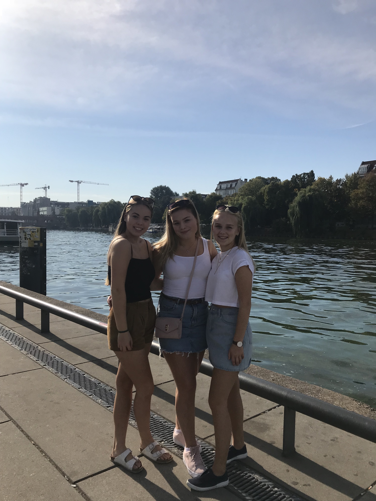
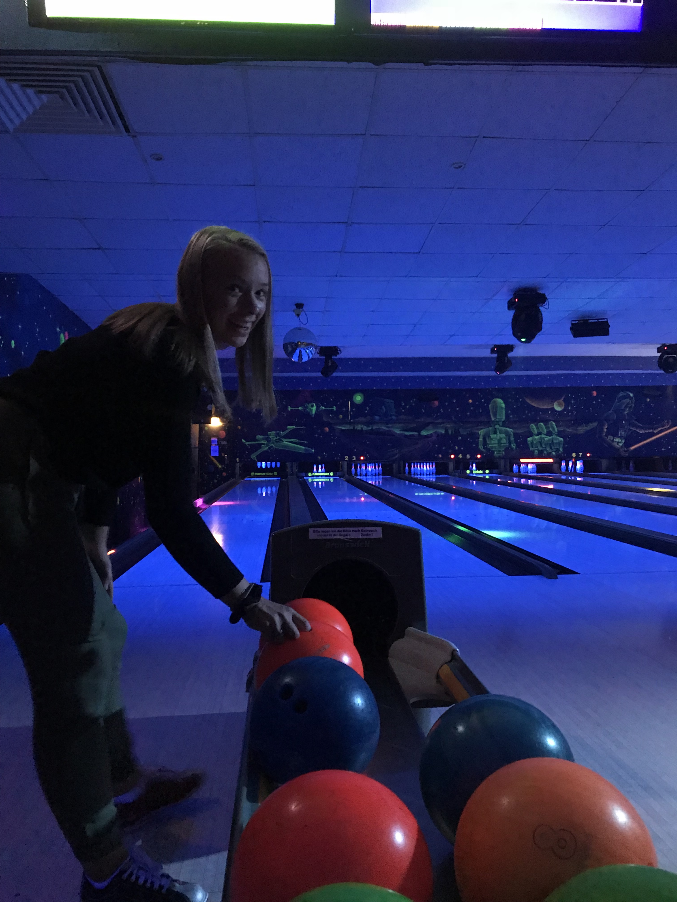

Tyskland
Framsida
Portugal
Polen
Rhodos
Tyskland
Hausten 2018 var eg på skuletur til Tyskland saman med klassen. Vi reiste frå Sogndal tidleg på morgonen og tok Kielferja frå Oslo til Kiel. Derfrå reiste vi vidare til Lübeck, nokre timar med buss. I Lübeck var det mange gamle bygningar som vi har å såg på, samt som vi også hadde ein del fritid der vi sjølv skulle finne attraksjonar. Etter to dagar i Lübeck reiste vi vidare til Berlin. Der hadde vi ein guida tur i buss, på omlag 3 timar. I berlin var det også ein del shopping. Vi tok Kielferja heim til Oslo igjen, då hadde vi vore på tur i 1 veke.
  
Kvar kveld når vi kom inn på hotellet måtte vi registrere oss på eit skjema, slik at lærarane visste at alle var innkomne. I skjema under kan du registrer deg på same måte som vi gjorde.